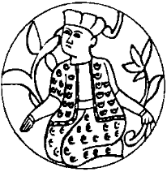

Ertesi sabah on buçuk gibi kalktı. Perran’ın çekici teklifini, verandada kahvaltıyı reddetti. Kısa bir duş aldı. Neredeyse koşarak, merdivenleri indi. Sokağa çıktı. Normalde pek kullanmadığı arabasını aldı. Yarım saat sonra Uno-mastik’in tüm “okumuşlarını” karşısına dizmiş, güya çaktırmadan yeni çalışma prensiplerini, politikalarını ve “özel ad bilimi” onomastique’i anlatıyor, anlattıkça heyecanlanıyordu.
Bildiği şeyleri çalışanlarına hemen hiç açıklayamamaktan dolayı sıkıntı içinde konuşuyor, yine de hünerli bir hatip olduğu için “okumuşları” belli bir yöne sevk edebiliyordu. Doğrudan Sabetayistlerin adını vermeden “aramızdaki gizli din taşıyanlar”, “tatlı soğanlar”, “Tatlısu Müslümanları”, “hubmesihfler”, “Dört gönül bayramcıları”, “honyollular/onyollular” gibi ifadeleriyle, zaten epeyce Uno-mastik deneyimine sahip olan bu insanlarda güçlü çağrışımlar yapıyordu.
Bunlardan biri ve pervasız bir kız olan Cemile Hanım cesur bir çıkış yaptı:
“Ay Argun Bey, siz de mi İslamcı oldunuz ayol? Şimdi işimiz gücümüz yok dönmeler ile mi uğraşacağız?”
Argun, frene basmak gerektiğini, fazla ileri gittiğini anladı. Konuyu biraz olsun örtmek için, yıllardır bir ansiklopedi yazmak arzusunda olduğunu, bir paravandan başka bir şey olmayan sakızcılık işine, askeri dönemde ülkemizde düşünce hayatı üzerindeki baskılar nedeniyle girdiğini, aslında beş kuruş kâr etmediğini, Uno-mastik’in asıl amacının emperyalizm ve işbirlikçisi yerli oligarşi tarafından geri bıraktırılan halkımızı aydınlatmak olduğunu, bunun muazzam bir bilgi projesi olduğunu anlattı.
Devir, ansiklopedi yazmak ve çevirmek devrinin son demleri olduğu için bu söyledikleri çok da yabana kaçmadı. İşin büyük bir kısmı sessiz sedasız zaten yapılmış olduğundan, artık hem bu dağınık bilgi öbeklerini bir senteze ulaştırmak hem de ansiklopedinin bitmesi için elzem olan kullanılmamış kaynakları kullanmak zamanı gelmişti. Bu yüzden de hepsine kendi çocukları kadar güvendiğinden, şimdi bu büyük projeyi onlarla paylaşıyordu. Şimdiye kadar sırrını çalışanları ile paylaşmayıp hinlik ettiği için özürler diliyordu. Ama bir kez dikkat etsindi herkes, şirketin ismi olan Uno-mastik’i nasıl seçmişti ama? Eğer dedikleri gerçek olmasa, ta eskiden yeni yöntemin adını çağrıştıran bu adı seçer miydi hiç? Şimdi cesur bir adım daha atacaklar, şirketin adındaki tireyi kaldıracaklar, “Unomastik” olarak yazacaklardı. Bu bir gizli mesajdı, anlayan anlardı. Onlar da anlamıştı, değil mi?
Argun Bey’in sorusu üzerine on iki parmak birden havaya kalktı. Evet, hepsi anlamıştı. Tankut sanki hepsinden daha çok anlamıştı. Delikanlı “ben demiştim... demiştim” diye paralanıyordu. İçinden gülümsedi. Demek ki yeni bir konsensüs oluşuyordu. Demek ki çalışmaya, onu desteklemeye devam edeceklerdi. Sorusu olan var mıydı bakalım? Evet iki adet parmak havadaydı. İlkini Tankut sordu. Şirketin adı ileride Onomastique olarak değişecek miydi? Yok canım, halk bu değişimin kendi yararına yapıldığını henüz kavrayamazdı, ayrıca gittikçe azalsa da hâlâ bazı baskılar vardı.
Üç sorudan oluşan ikinci soru daha teknikti. Şirketin Tankut’tan da eski, ilk elemanlarından Müberra Hanım sordu: “Argun Bey şu yeni yöntemi örnekleyerek biraz daha anlatır mısınız? Bir de yeni kaynaklarımız neler olacak? Artık ansiklopedilere, sözlüklere bakmayacak mıyız?”
“Sondan başlayayım efendim. Hayır, artık hiçbir başvuru kitabı okumayacağız. Çünkü yeterince baktık, okuduk. Elimdeki rakamlara göre 900.000 dolayında fişimiz var. Artık onları birleştirmek zamanı. Okumayacağız, çünkü biz artık kesin başvuru kitabını, başvuru kitaplarının ağababasını kendimiz yazacağız! Kullanacağımız yeni kaynaklara gelince: Sözlü ve yazılı birtakım kaynaklara başvuracağız. Dilin kendisi, şarkılar, türküler, atasözleri... kaynağımız olacak. Televizyon ve radyo izleme grupları kurulacak. Günlük gazetelere, haftalık veya aylık dergilere, magazin basınına başvuracağız. Yıllarca ciddi şeyler okumaktan canımız çıktı. Şimdi artık eğleneceğiz!”
Argun Bey’in son sözleri alkışlarla kesildi. Çay servisi yapmak için içeri giren Bayram Ağa da askısını masanın üzerine koyarak alkışlara katıldı. Herkes katılarak gülüyordu. Argun elini aşağı doğru sallayarak insanları susturdu:
“Gülmeyin. Yeni kaynaklanınız arasında bizatihi halkın kendisi ve kültürü de olacak! Değil mi Bayram Ağa yoksa Kral Baryam mı demeliyim?”
Argun Bey’in, Mavi Anadolu’cu Anemiz Hanım’dan tırtıkladığı bu hoşluk herkesi yeniden güldürdü. Artemiz’e göre Truvalılar eski Türklerdi. Avrupalı ve Batılıydılar. Yine adım Türklerden alan Trakya’dan göç etmişlerdi. Ozan Ömer Us’un aktardığı Truvalı Barış ve Ellen’in öyküleri malumdu. Daldığı hoşluk denizinden aniden çıkan Argun abartılı bir nezaketle,
“Şimdi Kral Baryam bize bir türkü Iütf ederler mi acaba, ki ben de onu örneğim olarak kullanabileyim?”
Önceden ayarlanmasına rağmen zavallı Bayram aval aval bakıyordu. Argun’un serçeparmagı ile kaşını kaşır gibi yapması üzerine birden uyandı ve sesinin son gücü ile asıldı:
“Karadır kaşlaaaaarııun ficeerman yaaz–dı–rır
Bu dert beni diiiyar diiyar gez–dirir...”
Argun sağ elini göğsüne bastırarak herkesi selamladı, yine aşırı bir duyarlıkla,
“Açıklayayım efenim” dedi ve devam etti:
“Şimdi malum, bu Sabetayistlerin Karakaş grubu var. Asla Korsakoff olmayan halkın ortak hafızasının ürünü olan şu türküye yakından bir bakın hele... Ne olmuş? Karakaşlar, on altıncı yüzyıldan itibaren artık Judeo–Türkik bir manzara arz eden Osmanlı İmparatorluğu’nda doğrudan sultanı etkileyecek bir konuma gelmişler, işlerine geldiği gibi ferman yazdırıyorlar! Şimdi Cemile Hanım antisemitizm yapıyorum diye kızacak ama ben ülkemi boğan her girişimin karşısında olmak hasebiyle söylüyorum, evet, koca devlete karar aldırıyorlar. Niçin? Bunun da cevabı ikinci dizede saklı. Açıkça söylüyorlar. Dertliler. Diyar diyar dolaşıyorlar. Niye dertliler? Çünkü Roma bunları darmadağın etti, dağıttı. Efendim, gördünüz artık, alenen diasporalarının sona ermesi için karar aldırıyorlar! Tabii bu kararı, Romanın mirasçısı olan Osmanlı’ya aldırmaları da ilginç, gözden kaçmamalı, çünkü Roma’ya tükürdüğünü yalatmak istiyor bunlar. Böyle de sabırlı ve inatçı bir kavimdirler. Unutmazlar. Var mı bir diyeceği olan?”
Derin bir sessizlik oldu. Sabetayistlerin adı açıkça geçtiği için Cemile iyice huzursuzlanmıştı. Bu da Argun’un gözünden kaçmadı. Muhalefeti buldozer gibi ezmesiyle tanınırdı. Kendi çatısı altında aykırı bir görüşe dayanamazdı. Üsteledi:
“Evet?”
“Şey... ‘Karakaşlar ferman yazdırır’ demiyor ki burada Argun Bey!”
“Hımm... aferin Cemile Hanım... Teori ve pratik arasındaki uyumsuzluğu yakalama özelliğinize hayranım. Evet... Kitle işte, ne olacak? Bu kadarını tutmuşlar akıllarında. Bayram, bundan sonra ‘Karakaşlar ferman yazdırır’ şeklinde düzelterek söyleyeceksin bu türküyü. Tamam mı? Akıl ve bilim bunu gerektiriyor. Bilimde demokrasi olmaz... Zaten hiçbir yerde olmaz. Bilmem anlatabiliyor muyum?”
Görünen o ki anlamışlardı. Demirci körüğüne benzeyen derin göğsünü doldurup türküyü emredildiği gibi söylemeye hazırlanan Bayram’ı zor önlediler ama anlamışlardı. Argun,
“Şimdi masa başına, marş marş” komutunu verdikten sonra ürkütücü bir edayla Cemile’ye döndü:
“Sizin soyadınız Karamanoğlu idi değil mi?”
Kız cevap vermedi.
Müberra Hanım sorup soracağına pişman olmuştu. Yine de yeni onomastique yasaları ışığında düşünmezlik edemedi:
“Karay–man oğlu... Hem Karay hem man... Bu kızın burada işi pek zor. Aslı Germanoğlu da olabilir ki daha kötü!”
Daha önce Argun Bey’den öğrendiğine göre adları “Alman” demek olan “Aşkenazların” pek tercih ettiği bir sonek olsa gerekti bu “man.” Evet, şimdi düşününce bütün gizli Aşkenaz soyadlarında “man” olması gerektiği gibi bir sonuç çıkarıyordu. Ya da soyadları man’lı olanların gizli Aşkenaz olduğunu ki, daha korkunç! Berkman, Hakman, Uçman, German, Toraman, Gürman vesaire. Kendi güzelim soyadını temiz, tehlikesiz bir şekilde öz Türk ve Müslüman adlarının en anlamlıları arasından seçip alan babacığına rahmetler okudu: Özislamoğlu. Bundan da bir şey çıkacak değildi herhalde.
Zavallı, bu yeni bilim dalının ne kadar kapsayıcı olabileceğini bilmemekle mazurdu. Altı ay kadar sonra Argun Bey’in, isminin ne anlama geldiğini çözmesinden yalnızca bir gün sonra bunu öğrendiğinde şaşıracak, gönderilmenin acısı, Cemile Karamanoglu’ndan dört ay kadar sonra onu da yakacaktı. Nasıl öğrenmişse öğrenmiş, Argun Bey “öz” sözcüğünün İbranicede güç demek olan “oz” ile aynı olduğunu, “İslam”ın da iyi gizlenmesine karşın “şalom”un bir türevi olduğunu ortaya çıkarmış, Müberra’yı çağırıp nazik bir şekilde şutlamıştı:
“Şimdiye kadar çok iyi idare ettiniz Sayın Şalom’un gücü! Bundan sonraki hayatınızda başarılar dilerim.”
O ilk gün ise vukuatsız geçmişti. Argun Bey, Tankut’u da alıp keyifle beşinci kattaki odasına giderken Tankut’un da çok sevdiğini zannettiği için iki çok şekerli kahve ısmarlamış, abi-yeğen beraberce Unomastik’in gelecekteki örgütsel yapısını konuşmuşlardı. Argun’un ofisine girer girmez Tankut:
“Abi aşağıda dalkavuk, yalaka demesinler diye söylemedim ama sen bir dâhisin. Ver mübarek ellerini öpeyim!” demiş, sonra niye artık holdingleşmek gerektiğini, affına sığınarak Argun’a açıklamıştı. Delikanlı kesinlikle haklıydı. Olay açıktı:
1. Sakız işi devam etmeliydi. Maniler yazılmalıydı. Çünkü yarın bu yetişmiş elemanlar bir şekilde işten ayrılırsa yerlerine kimi bulacaklardı? Sakız tam bir ekoldü. Yeni gelen herkes bu ekole “gitmeli,” bu ekolden diplomasını almalıydı. Çünkü Paris’teki ünlü Le Play Ekolü’nden bile daha değerli idi bu ekol.
2. Ansiklopedi kesinlikle yazılmalıydı. Yeni motor proje buydu. Malzemeyi herkes derleyecek, fakat eserin tek bir yazarı olacaktı. O da Argun Afaki’den başkası olamazdı.
3. Bir de şey vardı... Belki ilerde mevzuat müsaade eder, ÖGG’ler kurulurdu. O zamanlara bugünden hazırlık olması için özel kişiler hakkında veri toplanması ve depolanması iyi olmaz mıydı? Mesela birini işe alacaklar, hoop açıp belirli bir ücret karşılığında Unomastik ÖGG’den soruyor adamlar. Nasıl?
Nasıl olacaktı? Harika. Argun yerinden doğrulmuş,
“Gel oğlum, ben de senin o açık alnından öpeyim” demişti.
Unomastik Gum, Encyclopaedia Unomastica ve Unomastik Secdata, Unomastik Holding’in hemen o gün kurulması kararlaştırılan üç temel şirketi oldu. Bunlar özellikle 1993 yılından sonra büyüyecek ve aralarına başkaları da katılacaktı.
Tankut zıpırının makamdan çıkmadan yaptığı son numara da şıktı doğrusu:
“Abi... bir de şey var... Karaycaoğlan...”
“Ne olmuş oğlum ona?”
“Şey abi Karaycaoğlan’ın bir yavuklusu var ya Elif diye...”
“Ne olmuş lan, başlatma şimdi Elifinden!”
“Abi, Elif ya da Alef alfabenin ilk harfi. Bir demek. Eşanlamlılarını şöyle bir düşündüm tüylerim ürperdi: Ehud, Ehad, Vahit, Binek, Biricik... Herif manitaya söylüyorum ayağına sürekli kendi dininin propagandasını yapıyor. Aynen ‘şema israel Adonai Eloheym Adonai Ehad’ der gibi.”
“Hastiir... bu da mı? Onun için mi incecikten yağan karı ‘Elif... Elif’ diye tozutuyor? Aferin Tankut! Kaptın bu işi evlat. Artık bize karayda ölüm yok!”
“Karada” sözcüğüne bir “y” sokuşturmuş ve üzerine anlamlı anlamlı basarak söylemişti. Evladı gibi sevse de, sahi dün gece Tavramina ile ne güzel dans ediyorlardı, son sözü dünkü çocuk Tankut’a bırakacak değildi ya! Söylediklerinin yarattığı etkiyi ölçmek için Tankut’un yüzüne baktı.
Kısık çakır gözlerde idrake dair hiç bir işaret göremeyince yazacağı ansiklopedideki bir müstakbel maddeyi daha harcamaya karar verdi. “Bilim aynı zamanda özveri ve paylaşmaktır da” diye düşündü.
“Biliyor musun, eğer Bayram’ın ilk türküsünde işi anlamasalardı ikinciyi de okutacaktım.”
Tankut’un bu sefer soran bakışları üzerine,
“Karakaş gözlerin elmas,
Bu güzellik sana da kalmaz.” türküsünü yanık sesiyle okudu. Tankut’un gözleri iri iri açılmıştı.
“Abi bu bir bomba. Bu ortalığı sarsacak bir dinamit! Safı tarih! Ülkemizin sır dolu tarihinden bir kesit. 300 yıl önceki Buldan’da elmas işi olamayacağı için, çok büyük bir ihtimalle İzmir veya Selanik’te geçiyor” dedi.
Argun Bey, gayet memnun açıklamaya girişti:
“Aferin evladım, hemen anladığın gibi elmas kesimi, belki de kaçakçılığı –evet, evet, kaçakçılık karakterlerine daha uygun– ile uğraşan bir Karakaş’ın gözlerinde yansımalar yapıyor elmas. Fakat zannederim, Yakubî kolundan rakipleri böyle üstü kapalı bir tehdit savurarak Karakaş’ı uyarıyorlar. Görüyor musun? Tekerlerine çomak sokulunca böyle de aba altından sopa gösterirler, pek çıkarcı bir kavim doğrusu!”
Evet, son raunt yine onda kalmıştı. Bilgisine bilgiler katmış delikanlı çıktıktan sonra, günün koşuşturmasından dolayı henüz gazeteleri, hem de artık çok değer kazanan gazeteleri, okuyamadığını düşündü.
Her zaman masasının üzerinde hazır bekleyen yığının bugün biraz daha kabarık olduğunu keşfetti. “Aferin Çiçek. Akıllı kızsın” diye düşündü. Sıradan başladı. İlk gazetenin –adının lbranice Herut sözcüğü ile eşanlamlı olması yani özgürlük anlamına gelmesi dolayısıyla Sabetaycılarca kontrol edildiği kesin olan gazetenin– doğrudan üçüncü sayfasına gitti. Kim kimi nasıl kesti, cinnet geçiren dana sürüdeki öküzlere nasıl saldırdı, dişiyle kola kapağı açarken şişeyi yutan adama ne oldu gibi başlıkları hızla okurken gözü sayfanın dibinde resimli, ufak bir habere takıldı.
Daha doğrusu, iki adet resim vardı. Birinde bir insan, küçük bir kan gölünün ortasında boylu boyunca uzanmış yatıyor, diğerinde ise aynı kişi, başında kulaklı deri şapkasıyla, cepte uzun süre taşındığı için bir köşesi kopmuş mavi fonlu bir vesikalıktan melül mahzun bakıyor. “Yav, ben bu suratı tanıyorum ama nereden? Akrabamız filan olmasın bu kısık kısık gözlerle?” diye düşünerek haberi okumaya başladı. Kahretsin! Yerinden fırladı. Dünkü Yomut’tu bu. En ufak bir şüphe bile olamazdı, kendine Hayal Taşı’nı gaskallayan uzman bavul taciri...
“Kızım... taşım nerede? Nerede benim taşım?” çığlıklarına gelen Çiçek:
“Gazetelerin şimdiki durduğu yerde duruyordu. Onları alırken düşürmeyesiniz diye kaldırdım” diyerek, taşı koyduğu raftan aldı ve Argun’a verdi.
Biraz sakinleşen Argun haberin kalanını okudu. Evet, yazıklar olsun. Biz böyle mi ağabeylik yapacaktık Orta Asya’ya? Yapılan soruşturmada Türkmen vatandaşı olduğu anlaşılan Allahverdi Canverdikuluoğlu, dün öğlen sularında, güpegündüz, Beyazıt Meydanı’nın ortasında kimliği belirlenemeyen bir şahıs tarafından öldürülmüştü. Başına “sert, yuvarlak, kesici olmayan, ağır” bir cisimle vurulmuştu. Üzerinden 1023 dolar ve iki yüz bin lira çıkan Canverdikuluoglu’nun bir soyguna kurban gitmediğini düşünen polis meseleyi araştırıyordu.
“Yok, aynı zamanda ölüm günüymüş de...” diye mırıldandı Argun. Dehşete kapılmıştı. Hâlâ orada olan ve gazeteyi ezbere bildiği anlaşılan Çiçek sordu:
“Tanıyor muydunuz efendim rahmetliyi?”
“Yok... yok... nereden tanıyacağım? Üzüldüm sadece. Kardeşlerimiz ta Orta Asyalardan kalkıp geliyor, burada başlarına gelene bak! Bunu yapan sence Türk olabilir mi Çiçek? Biz tam adamlarla kavuşmuşken bunca yıldan sonra?”
“Şey, Tankut Bey tanıyormuş da... dün kendisinden bakır bir sürahi satın almış...”
“Yaa?”
“Acaba parasını benim verdiğimi de söylemiş midir şu karakoncolosa? Meraki şey! Dur bir punduna getirip, soyadı neydi ya bunun, koyayım kapı önüne...” türü düşünceler geçirirken aklından, kız devam etti:
“Evet, tam 200 dolar saymış. Ama güzel bir sürahi. Tebriz işi galiba.”
Durum biraz uygunsuz olmasına karşın Argun Afaki keyiflendi. “Bak sen şu Tankut’a. Aferin, büyük cevherler görüyorum kendisinde. Şöyle yurtdışında iyi bir ekole mi göndersek acaba kendisini Unomastik Holding hesabına? Bir mastır yapar gelir. Mesela Romanya Ohri Açık Üniversitesine filan, oralara da açılmak gerek...” diye düşündü. Biraz sonra 7000 dolarını kurtardığını anlayınca iyiden iyiye neşelendi. Her neşelendiğinde yaptığı gibi çok şekerli bir kahve söyledi kendisine.